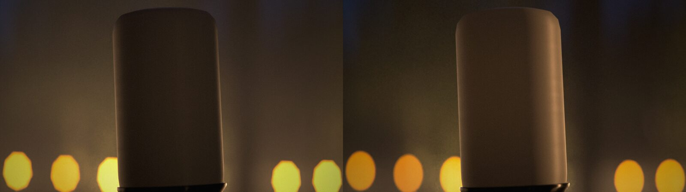
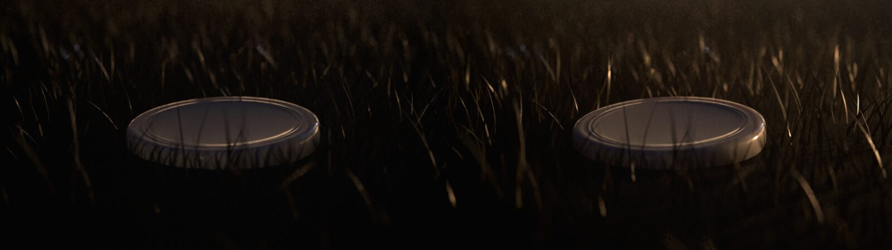
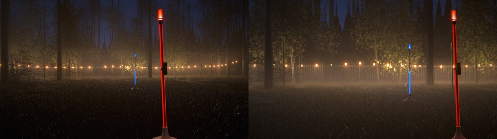
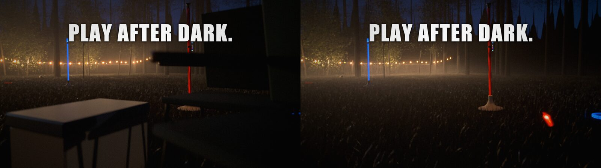

The night-game film rendered on the PC with the look-dev lab's settings, then polished frame by frame with a creative-director loop. Temp music and the review slate stay on: this cut is for a small internal audience only.
Tap a shot to jump to it. Each bar is the creative director's score out of 10 against an award-level product film: grey at the first review, amber now.
Each round renders two frames from every shot, a critic agent reviews them at full size, and the next round fixes its top notes. Fixes go into the render scripts as switches, never into the frames.
The critic scored every shot from 4 to 7.5. The colour and glow were close to pro. The type, the polygon bokeh, the sawtooth treeline and the flat dark products still read as CG.
Circular aperture with the oval kept, string-light bulbs at half so they hold amber, tighter two-line titles, the knock title moved off the flying bottle, softer house windows. Five of six fixes landed with no regressions.
A warm grazing rim on the dark bottle, disc and nest; thinner haze with a fog layer on the grass; the ignition shot at 50 mm so B's pole doubles; the chairs and cooler moved out of frame. Six shots rose, two dropped: the thinner haze exposed the fake treeline.
Ragged conifer silhouettes and a thin high haze, more headroom over A's bottle, a real edge light, the end card at 512 samples, the knock and PLAY AFTER DARK titles moved clear of the poles.
Left: the first review. Right: round 2. Same frame, same camera time.



